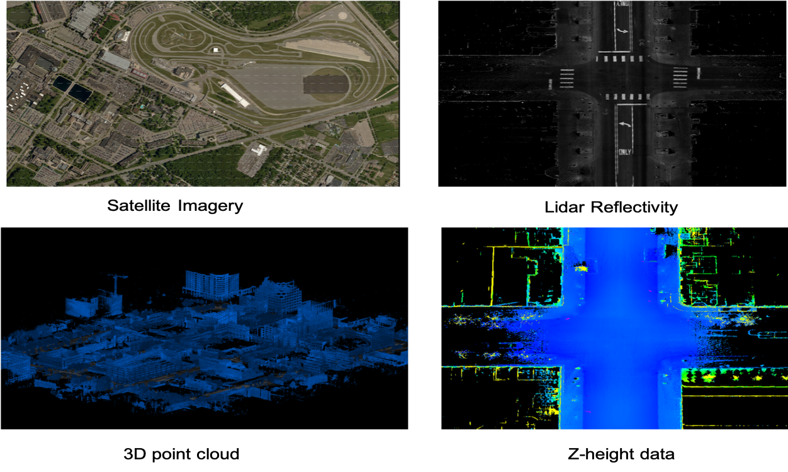
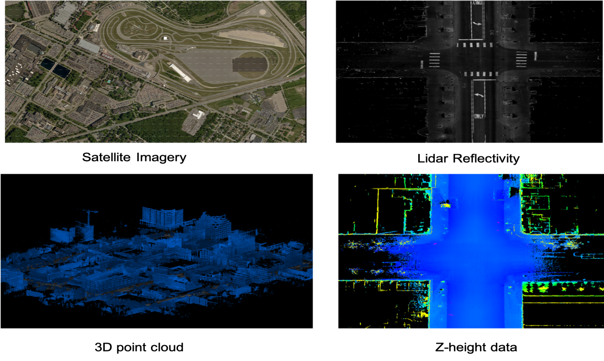

We present a challenging multi-agent seasonal data set collected by multiple Ford autonomous vehicles (not necessarily same vehicles) at different days and times of the year. The vehicles traversed a fixed route of 66 km in Michigan that included a mix of driving scenarios, including the DTW metro airport, freeways, city centers, university campus, suburban neighborhoods, etc. Each vehicle used in this data collection is a Ford Fusion outfitted with an Applanix POS-LV inertial measurement unit (IMU), four HDL-32 Velodyne 3D-lidar scanners, 6 Pointgrey 1.3 MP stereo cameras arranged on the rooftop for 360 degree coverage and 1 Pointgrey 5 MP camera mounted behind the windsheild for forward field of view. We present the seasonal variation in weather, lighting, construction and traffic conditions experienced in dynamic urban environments. This dataset can help design robust algorithms for autonomous vehicles and multi-agent systems. Each log in the dataset is time-stamped and contains raw data from all the sensors, calibration values, pose trajectory, ground truth pose and map data. All data is available in Rosbag format that can be visualized, modified and applied using the open source Robot Operating System (ROS). We also provide the output of state-of-the-art intensity-based localization with ground truth for bench-marking purposes. The dataset can be freely downloaded and used as required.
Data Structure
The dataset is organized on the basis of dates when each log was collected. The top level directories are named as YYYY-MM-DD. Each of these directories contain subfolders for each Vehicle and Maps. Each Vehicle sub-directory contains all the logs in compressed rosbag format and the calibration files for each sensor. Each rosbag is named as YYYY-MM-DD-HHMMSS-VN where:
- YYYY - The year when data was collected
- MM - The month when data was collected
- DD - The day when data was collected
- HHMMSS - The time in 24 hours, minutes and second when the data collection began
- VN - The serial number of vehicle that collected the data, example V2.
Tools
All data is available in Rosbag format that can be visualized, modified and applied using the open source Robot Operating System (ROS). We will also provide a custom ROS package that can be used to visualize all the sensor data and maps as the rosbags are playbacked.
 

Support
Please send bug reports to Siddharth Agarwal: <sagarw20@ford.com> or Ankit Vora: <avora3@ford.com>